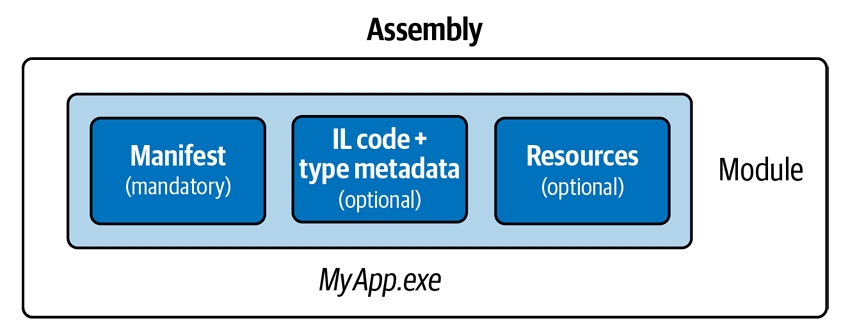
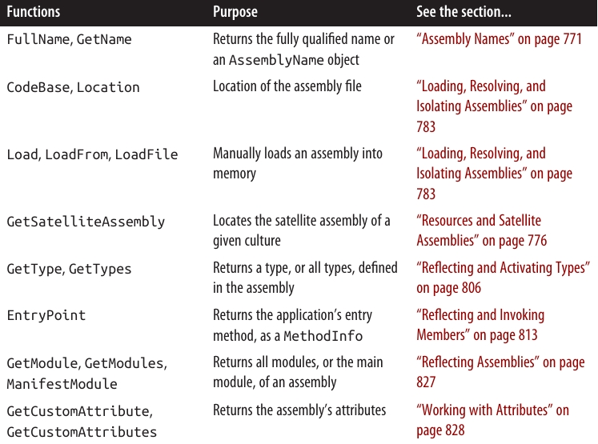

درس هفدهم: اسمبلیها (Assemblies)
یک assembly واحد پایهای برای استقرار (deployment) در .NET است و همچنین محفظهای برای تمام typeها به شمار میآید. یک اسمبلی شامل typeهای کامپایلشده به همراه کد Intermediate Language (IL)، منابع اجرایی (runtime resources) و اطلاعاتی برای مدیریت نسخهها و ارجاع به سایر اسمبلیها است. همچنین اسمبلی یک مرز برای type resolution تعریف میکند. در .NET، یک اسمبلی معمولاً شامل یک فایل با پسوند .dll است.
زمانی که یک برنامه اجرایی در .NET میسازید، دو فایل ایجاد میشود:
- یک اسمبلی (.dll)
- یک executable launcher (.exe) که متناسب با پلتفرمی است که هدف قرار دادهاید.
این با چیزی که در .NET Framework اتفاق میافتد متفاوت است، جایی که یک portable executable (PE) assembly تولید میشود. یک PE با پسوند .exe هم بهعنوان اسمبلی و هم بهعنوان برنامه اجرایی عمل میکند و میتواند بهطور همزمان نسخههای ۳۲ و ۶۴ بیتی ویندوز را هدف قرار دهد.
اکثر typeهای این فصل از فضای نامهای زیر آمدهاند:
System.ReflectionSystem.ResourcesSystem.Globalization
🔹 محتوای یک اسمبلی (What’s in an Assembly) 🔹
یک اسمبلی شامل چهار نوع محتوا است:
-
Assembly Manifest
- اطلاعاتی به CLR میدهد، مانند نام اسمبلی، نسخه آن و سایر اسمبلیهایی که به آن ارجاع دارند.
-
Application Manifest
- اطلاعاتی به سیستمعامل میدهد، مانند نحوه استقرار اسمبلی و اینکه آیا نیاز به دسترسی مدیریتی وجود دارد یا خیر.
-
Compiled Types
- کد IL کامپایلشده و metadata مربوط به typeهای تعریفشده در اسمبلی.
-
Resources
- سایر دادههای تعبیهشده در اسمبلی، مانند تصاویر و متنهای قابل بومیسازی (localizable text).
از این میان، تنها assembly manifest اجباری است، هرچند که تقریباً همیشه یک اسمبلی شامل typeهای کامپایلشده هم هست (مگر اینکه یک resource assembly باشد. برای جزئیات به بخش “Resources and Satellite Assemblies” در صفحه ۷۷۶ مراجعه کنید).
🔹 Assembly Manifest 🔹
Assembly Manifest دو هدف دارد:
- اسمبلی را به محیط میزبانی مدیریتشده (managed hosting environment) معرفی میکند.
- بهعنوان یک فهرست برای moduleها، typeها و منابع موجود در اسمبلی عمل میکند.
بنابراین، اسمبلیها خودتوصیفی (self-describing) هستند. مصرفکننده میتواند تمام دادهها، typeها و عملکردهای یک اسمبلی را بدون نیاز به فایلهای اضافی کشف کند.
Assembly Manifest بهصورت دستی اضافه نمیشود؛ بلکه بهطور خودکار در هنگام کامپایل داخل اسمبلی جاسازی میشود.
🔹 دادههای مهم ذخیرهشده در Manifest 🔹
- نام سادهی اسمبلی
- شماره نسخه (AssemblyVersion)
- کلید عمومی و هش امضا شده، در صورت داشتن strong name
- فهرست اسمبلیهای مرجع، شامل نسخه و کلید عمومی آنها
- فهرست typeهای تعریفشده در اسمبلی
- فرهنگی که هدف قرار داده شده، در صورت satellite assembly (AssemblyCulture)
دادههای اطلاعاتی دیگر شامل:
- عنوان و توضیحات کامل (AssemblyTitle و AssemblyDescription)
- اطلاعات شرکت و حق نشر (AssemblyCompany و AssemblyCopyright)
- نسخه نمایشی (AssemblyInformationalVersion)
- ویژگیهای اضافی برای دادههای سفارشی
بخشی از این دادهها از پارامترهای ورودی به کامپایلر استخراج میشوند، مانند فهرست اسمبلیهای مرجع یا کلید عمومی برای امضای اسمبلی. بقیه از assembly attributes میآیند (که در پرانتز مشخص شدهاند).
🔹 مشاهده محتویات Manifest 🔹
میتوانید محتویات assembly manifest را با ابزار .NET به نام ildasm.exe مشاهده کنید. در فصل بعدی (۱۸) توضیح داده میشود که چگونه میتوان این کار را بهصورت برنامهنویسی با reflection انجام داد.
🔹 مشخص کردن Assembly Attributes 🔹
ویژگیهای معمول اسمبلی را میتوان در Visual Studio، در صفحه Properties پروژه و در تب Package مشخص کرد. تنظیمات این تب به فایل پروژه (.csproj) اضافه میشوند.
برای مشخص کردن ویژگیهایی که توسط تب Package پشتیبانی نمیشوند، یا در صورت عدم کار با فایل .csproj، میتوانید assembly attributes را در کد منبع تعیین کنید (اغلب در فایلی به نام AssemblyInfo.cs).
مثال: برای دسترسی دادن به typeهای داخلی به یک پروژه تست واحد:
using System.Runtime.CompilerServices;
[assembly: InternalsVisibleTo("MyUnitTestProject")]
🔹 Application Manifest (ویندوز) 🔹
Application Manifest یک فایل XML است که اطلاعاتی دربارهی اسمبلی به سیستمعامل منتقل میکند. این فایل در هنگام ساخت، بهعنوان یک Win32 resource داخل فایل اجرایی قرار میگیرد. اگر موجود باشد، قبل از بارگذاری اسمبلی توسط CLR خوانده شده و پردازش میشود و میتواند نحوه اجرای فرآیند برنامه در ویندوز را تحت تأثیر قرار دهد.
یک manifest در .NET دارای عنصر ریشهای به نام assembly در فضای نام XML زیر است:
<?xml version="1.0" encoding="utf-8"?>
<assembly manifestVersion="1.0" xmlns="urn:schemas-microsoft-com:asm.v1">
<!-- محتوای manifest -->
</assembly>
مثالی که درخواست دسترسی مدیریتی (administrative elevation) میکند:
<?xml version="1.0" encoding="utf-8"?>
<assembly manifestVersion="1.0" xmlns="urn:schemas-microsoft-com:asm.v1">
<trustInfo xmlns="urn:schemas-microsoft-com:asm.v2">
<security>
<requestedPrivileges>
<requestedExecutionLevel level="requireAdministrator" />
</requestedPrivileges>
</security>
</trustInfo>
</assembly>
⚠️ برنامههای UWP دارای manifest بسیار پیچیدهتری هستند که در فایل
Package.appxmanifestتوصیف شده است و شامل اعلام قابلیتهای برنامه است که مشخص میکند سیستمعامل چه مجوزهایی میدهد. سادهترین روش برای ویرایش این فایل، استفاده از Visual Studio است که با دوبار کلیک روی فایل، یک دیالوگ نمایش میدهد.
🔹 استقرار Application Manifest 🔹
برای افزودن یک application manifest به پروژه .NET در Visual Studio:
- روی پروژه در Solution Explorer راستکلیک کنید.
- انتخاب کنید Add → New Item
- گزینه Application Manifest File را انتخاب کنید.
پس از ساخت پروژه، manifest داخل output assembly جاسازی میشود.
🔹 Modules 🔹
ابزار ildasm.exe وجود یک application manifest جاسازیشده را تشخیص نمیدهد، اما Visual Studio هنگام دوبار کلیک روی اسمبلی در Solution Explorer نشان میدهد که آیا manifest موجود است یا خیر.
در واقع، محتویات یک اسمبلی داخل یک container میانی به نام module بستهبندی میشود. هر module متناظر با یک فایل حاوی محتویات اسمبلی است. دلیل این لایه اضافی این است که در .NET Framework امکان توزیع یک اسمبلی در چند فایل وجود دارد، اما این ویژگی در .NET 5+ و .NET Core وجود ندارد.
📌 شکل 17-1 رابطه بین assembly و module را نشان میدهد.

اگرچه .NET از multifile assemblies پشتیبانی نمیکند، گاهی لازم است از لایه اضافی containership که moduleها ایجاد میکنند، آگاه باشید. سناریوی اصلی این موضوع در reflection است (به بخشهای «Reflecting Assemblies» در صفحه ۸۲۷ و «Emitting Assemblies and Types» در صفحه ۸۴۱ مراجعه کنید).
🔹 کلاس Assembly 🔹
کلاس Assembly در فضای نام System.Reflection دروازهای برای دسترسی به metadata اسمبلیها در زمان اجرا (runtime) است. روشهای مختلفی برای بهدست آوردن یک assembly object وجود دارد؛ سادهترین روش، استفاده از ویژگی Assembly یک Type است:
Assembly a = typeof(Program).Assembly;
همچنین میتوانید با فراخوانی یکی از static methodهای کلاس Assembly یک شیء اسمبلی بهدست آورید:
-
GetExecutingAssembly
اسمبلی نوعی را برمیگرداند که تابع جاری در آن تعریف شده است. -
GetCallingAssembly
عملکرد مشابه GetExecutingAssembly را دارد، اما برای تابعی که تابع جاری را فراخوانی کرده است. -
GetEntryAssembly
اسمبلیای را برمیگرداند که متد ورود (entry method) اصلی برنامه را تعریف میکند.
پس از داشتن یک Assembly object، میتوانید از properties و methods آن برای پرسوجوی metadata اسمبلی و بازتاب (reflect) بر روی typeهای آن استفاده کنید.
📌 جدول ۱۷-۱ خلاصهای از این توابع را نشان میدهد.

🔹 اسامی قوی و امضای اسمبلی (Strong Names and Assembly Signing) 🔹
داشتن strong name برای یک اسمبلی در .NET Framework اهمیت داشت، به دو دلیل:
- امکان بارگذاری اسمبلی در Global Assembly Cache (GAC).
- امکان ارجاع سایر strongly named assemblies به آن.
در .NET 5+ و .NET Core این موضوع کمتر اهمیت دارد، زیرا این runtimeها نه global assembly cache دارند و نه محدودیت دوم را اعمال میکنند.
یک strongly named assembly هویتی یکتا دارد. این کار با افزودن دو قطعه metadata به manifest انجام میشود:
- یک شماره یکتا متعلق به نویسندگان اسمبلی
- یک signed hash از اسمبلی که ثابت میکند صاحب شماره یکتا، اسمبلی را تولید کرده است
این فرآیند نیازمند یک جفت کلید عمومی/خصوصی است. کلید عمومی شماره یکتای شناسایی را فراهم میکند و کلید خصوصی برای امضا استفاده میشود.
⚠️ Strong-name-signing با Authenticode-signing متفاوت است. Authenticode بعداً در همین فصل توضیح داده خواهد شد.
کلید عمومی در تضمین یکتایی ارجاعات به اسمبلیها ارزشمند است: یک strongly named assembly کلید عمومی را در هویت خود وارد میکند.
در .NET Framework، کلید خصوصی از تغییر و دستکاری اسمبلی جلوگیری میکند، زیرا بدون کلید خصوصی شما، هیچکس نمیتواند نسخه تغییر یافته اسمبلی را منتشر کند بدون اینکه امضا خراب شود. در عمل، این برای بارگذاری اسمبلی در GAC کاربرد دارد. در .NET 5+ و .NET Core امضا کمکی ندارد، زیرا بررسی نمیشود.
اضافه کردن strong name به یک اسمبلی قبلاً «ضعیف» نامگذاریشده، هویت آن را تغییر میدهد. به همین دلیل، بهتر است از ابتدا اگر احتمال میدهید اسمبلی در آینده به strong name نیاز پیدا کند، آن را از ابتدا قوی نامگذاری کنید.
🔹 چگونه یک اسمبلی را Strongly Name کنیم 🔹
برای دادن strong name به یک اسمبلی، ابتدا یک جفت کلید عمومی/خصوصی با ابزار sn.exe تولید کنید:
sn.exe -k MyKeyPair.snk
Visual Studio میانبری به نام Developer Command Prompt for VS نصب میکند که یک command prompt با مسیر ابزارهای توسعه (مانند sn.exe) فراهم میآورد.
این دستور یک جفت کلید جدید تولید میکند و آن را در فایلی به نام MyKeyPair.snk ذخیره میکند. اگر بعداً این فایل را از دست بدهید، توانایی کامپایل مجدد اسمبلی با همان هویت را بهطور دائمی از دست خواهید داد.
میتوانید با استفاده از این فایل، اسمبلی را امضا کنید. در Visual Studio:
- به Project Properties بروید
- در تب Signing، گزینه Sign the assembly را انتخاب کنید
- فایل
.snkخود را مشخص کنید
یک جفت کلید میتواند چندین اسمبلی را امضا کند؛ هر کدام هنوز هویت متمایزی خواهند داشت، اگر نام ساده آنها متفاوت باشد.
🔹 اسامی اسمبلی (Assembly Names) 🔹
هویت یک اسمبلی شامل چهار بخش از metadata در manifest است:
- نام ساده (Simple Name)
- نسخه (Version) — اگر موجود نباشد “0.0.0.0” است
- فرهنگ (Culture) — اگر satellite assembly نباشد “neutral” است
- Public Key Token — اگر strongly named نباشد “null” است
نام ساده از ویژگیها استخراج نمیشود، بلکه از نام فایل اصلی کامپایلشده (بدون پسوند) میآید. مثلاً نام ساده اسمبلی System.Xml.dll برابر با System.Xml است. تغییر نام فایل، نام ساده اسمبلی را تغییر نمیدهد.
شماره نسخه از ویژگی AssemblyVersion میآید و رشتهای شامل چهار قسمت است:
major.minor.build.revision
مثال:
[assembly: AssemblyVersion("2.5.6.7")]
فرهنگ از ویژگی AssemblyCulture گرفته میشود و برای satellite assemblyها کاربرد دارد (در بخش «Resources and Satellite Assemblies» صفحه ۷۷۶ توضیح داده شده است).
Public Key Token از strong name هنگام کامپایل به دست میآید.
🔹 اسامی کامل (Fully Qualified Names) 🔹
یک نام کامل اسمبلی رشتهای است که شامل هر چهار بخش هویت است، به شکل:
simple-name, Version=version, Culture=culture, PublicKeyToken=public-key
مثال: نام کامل System.Private.CoreLib.dll:
System.Private.CoreLib, Version=4.0.0.0, Culture=neutral, PublicKeyToken=7cec85d7bea7798e
اگر ویژگی AssemblyVersion وجود نداشته باشد، نسخه به صورت 0.0.0.0 نمایش داده میشود. اگر unsigned باشد، public key token برابر null است.
ویژگی FullName یک Assembly object نام کامل آن را برمیگرداند. کامپایلر همیشه از نام کامل برای ثبت ارجاعات به اسمبلی در manifest استفاده میکند.
⚠️ نام کامل اسمبلی شامل مسیر دایرکتوری نیست. یافتن اسمبلی در دایرکتوری دیگر موضوعی جداگانه است که در بخش «Loading, Resolving, and Isolating Assemblies» صفحه ۷۸۳ توضیح داده میشود.
🔹 کلاس AssemblyName 🔹
کلاس AssemblyName دارای ویژگیهای typed برای هر چهار بخش نام کامل اسمبلی است. دو کاربرد اصلی دارد:
- تجزیه یا ساخت نام کامل اسمبلی
- ذخیره دادههای اضافی برای کمک به یافتن (resolve) اسمبلی
روشهای بهدست آوردن یک AssemblyName object:
- ساخت یک AssemblyName با ارائه نام کامل
- فراخوانی GetName روی یک Assembly موجود
- فراخوانی AssemblyName.GetAssemblyName با مسیر فایل اسمبلی
همچنین میتوان یک AssemblyName بدون آرگومان ساخت و سپس هر ویژگی آن را تنظیم کرد تا یک نام کامل ساخته شود. در این حالت، AssemblyName قابل تغییر (mutable) است.
🔹 ویژگیها و متدهای اصلی AssemblyName 🔹
| نوع | نام | توضیح |
|---|---|---|
| string | FullName | نام کامل |
| string | Name | نام ساده |
| Version | Version | نسخه اسمبلی |
| CultureInfo | CultureInfo | برای satellite assembly |
| string | CodeBase | مکان اسمبلی |
| byte[] | GetPublicKey() | کلید عمومی کامل (160 بایت) |
| void | SetPublicKey(byte[] key) | تعیین کلید عمومی |
| byte[] | GetPublicKeyToken() | نسخه ۸ بایتی کلید عمومی |
| void | SetPublicKeyToken(byte[] publicKeyToken) | تعیین public key token |
- Version خود یک شیء strongly typed با ویژگیهای Major, Minor, Build, Revision است.
- GetPublicKey کلید عمومی رمزنگاری کامل را برمیگرداند.
- GetPublicKeyToken آخرین ۸ بایت استفادهشده برای تعیین هویت را برمیگرداند.
مثال: بهدست آوردن نام ساده یک اسمبلی:
Console.WriteLine(typeof(string).Assembly.GetName().Name);
// System.Private.CoreLib
دریافت نسخه اسمبلی:
string v = myAssembly.GetName().Version.ToString();
🔹 نسخههای اطلاعاتی و فایل اسمبلی 🔹
دو ویژگی دیگر برای بیان اطلاعات مربوط به نسخه وجود دارد. برخلاف AssemblyVersion، این دو ویژگی هویت اسمبلی را تغییر نمیدهند و تأثیری بر کامپایل یا زمان اجرا ندارند:
-
AssemblyInformationalVersion
نسخهای که به کاربر نهایی نمایش داده میشود. در دیالوگ Windows File Properties بهعنوان Product Version دیده میشود. هر رشتهای میتواند باشد، مانند"5.1 Beta 2". معمولاً تمام اسمبلیهای یک برنامه دارای همین شماره نسخه اطلاعاتی هستند. -
AssemblyFileVersion
معمولاً به شماره build آن اسمبلی اشاره دارد. در دیالوگ Windows File Properties بهعنوان File Version دیده میشود. مشابه AssemblyVersion، باید رشتهای شامل حداکثر چهار عدد جداشده با نقطه باشد.
🔹 امضای Authenticode 🔹
Authenticode یک سیستم code-signing است که هدف آن اثبات هویت ناشر برنامه است.
امضای Authenticode و strong-name signing مستقل از هم هستند؛ میتوانید یک اسمبلی را با هر یک یا هر دو سیستم امضا کنید.
اگرچه strong-name signing میتواند اثبات کند که اسمبلیهای A، B و C از یک ناشر آمدهاند (با فرض اینکه کلید خصوصی لو نرفته باشد)، اما نمیتواند مشخص کند آن ناشر چه کسی است. برای مثال، برای دانستن اینکه ناشر Joe Albahari یا Microsoft Corporation بوده است، به Authenticode نیاز دارید.
Authenticode هنگام دانلود برنامهها از اینترنت مفید است، زیرا تضمین میکند برنامه دقیقاً از همان شخصی آمده که توسط Certificate Authority معرفی شده و در مسیر انتقال تغییر نکرده است. همچنین مانع نمایش هشدار “Unknown Publisher” هنگام اجرای برنامه دانلود شده برای اولین بار میشود.
⚠️ امضای Authenticode همچنین شرط ارسال برنامهها به Windows Store است.
Authenticode نه تنها با اسمبلیهای .NET کار میکند، بلکه با فایلهای اجرایی unmanaged و باینریها مانند فایلهای نصب .msi نیز سازگار است. البته Authenticode تضمین نمیکند که برنامه فاقد malware باشد، ولی احتمال آن را کاهش میدهد.
یک فرد یا سازمان حاضر شده نام خود (با پشتوانه پاسپورت یا مدارک شرکت) را پشت فایل اجرایی یا کتابخانه قرار دهد.
CLR امضای Authenticode را بهعنوان بخشی از هویت اسمبلی نمیشناسد، اما میتواند امضا را بهصورت درخواستی (on demand) خوانده و اعتبارسنجی کند.
🔹 نحوه امضا با Authenticode 🔹
۱. بهدست آوردن و نصب گواهینامه
ابتدا باید یک code-signing certificate از یک Certificate Authority (CA) دریافت کنید. سپس میتوانید گواهی را بهصورت فایل رمزدار استفاده کنید یا آن را در certificate store کامپیوتر بارگذاری کنید.
مزیت بارگذاری در certificate store این است که میتوانید بدون وارد کردن رمز امضا کنید، که برای اسکریپتهای خودکار و فایلهای batch ایمنتر است.
۲. محل دریافت گواهینامه
تعداد کمی CA برای code-signing بهصورت پیشفرض در ویندوز وجود دارند، مانند:
- Comodo
- GoDaddy
- GlobalSign
- DigiCert
- Thawte
- Symantec
همچنین فروشندگانی مانند K Software وجود دارند که گواهیهای code-signing این CAها را با تخفیف ارائه میدهند.
گواهیهای Authenticode از این فروشندگان معمولاً کمتر محدودکننده هستند و برنامههای غیر مایکروسافتی را نیز امضا میکنند. توجه داشته باشید که گواهی SSL معمولاً برای Authenticode قابل استفاده نیست، زیرا SSL مالکیت دامنه را اثبات میکند، اما Authenticode هویت ناشر را.
برای بارگذاری گواهی در certificate store:
- Certificate Manager را باز کنید
- پوشه Personal را باز کنید
- روی Certificates راستکلیک و All Tasks → Import را انتخاب کنید
- با import wizard مراحل را دنبال کنید
پس از وارد کردن گواهی، روی آن View کلیک کنید، به تب Details بروید و thumbprint آن را کپی کنید. این همان هش SHA-256 است که برای امضا نیاز دارید.
⚠️ اگر قصد دارید همزمان strong-name هم استفاده کنید، ابتدا باید strong-name-signing انجام شود، سپس Authenticode. اگر ترتیب برعکس باشد، CLR اضافه شدن strong name بعد از Authenticode را بهعنوان تغییر غیرمجاز در نظر میگیرد.
۳. امضا با signtool.exe
میتوانید از ابزار signtool که همراه Visual Studio نصب میشود استفاده کنید.
مثال امضا فایل LINQPad.exe با گواهی در My Store به نام "Joseph Albahari" با الگوریتم SHA-256:
signtool sign /n "Joseph Albahari" /fd sha256 LINQPad.exe
همچنین میتوانید توضیح و URL محصول را اضافه کنید:
... /d LINQPad /du http://www.linqpad.net
⚠️ معمولاً برای حفظ اعتبار پس از انقضای گواهی، باید time-stamping server هم مشخص شود.
Time Stamping
با استفاده از time-stamping، برنامههایی که قبل از انقضای گواهی امضا شدهاند، هنوز معتبر باقی میمانند. CA یک URI برای این منظور ارائه میدهد، مانند:
... /tr http://timestamp.comodoca.com/authenticode /td SHA256
بررسی امضا
سادهترین روش برای مشاهده امضای Authenticode، نگاه کردن به Digital Signatures tab در Windows Explorer است. ابزار signtool نیز این امکان را فراهم میکند.
🔹 منابع و Satellite Assemblies 🔹
یک برنامه معمولاً نه تنها شامل کد اجرایی است، بلکه محتواهایی مانند متن، تصویر یا فایل XML نیز دارد. این محتواها میتوانند در یک اسمبلی از طریق resource گنجانده شوند.
دو کاربرد اصلی برای resources:
- افزودن دادههایی که نمیتوانند در کد منبع باشند، مانند تصاویر
- ذخیره دادههایی که ممکن است در برنامههای چندزبانه نیاز به ترجمه داشته باشند
یک assembly resource در نهایت یک byte stream با نام مشخص است. میتوان یک اسمبلی را مانند یک دیکشنری از byte arrays در نظر گرفت که کلیدهای آن رشته هستند.
مثال در ildasm از اسمبلی که دو resource به نامهای banner.jpg و data.xml دارد:
.mresource public banner.jpg
{
// Offset: 0x00000F58 Length: 0x000004F6
}
.mresource public data.xml
{
// Offset: 0x00001458 Length: 0x0000027E
}
در این مثال، banner.jpg و data.xml مستقیماً به اسمبلی اضافه شدهاند، هر کدام بهعنوان embedded resource خود. این سادهترین روش برای کار با منابع است.
.NET همچنین اجازه میدهد محتوا را از طریق کانتینرهای میانی .resources اضافه کنید. این کانتینرها برای محتوایی طراحی شدهاند که ممکن است نیاز به ترجمه در زبانهای مختلف داشته باشند.
Localized .resources میتوانند بهصورت satellite assembly جداگانه بستهبندی شوند و در زمان اجرا بر اساس زبان سیستم کاربر بهطور خودکار انتخاب شوند.
📌 شکل 17-2 یک اسمبلی را نشان میدهد که دو resource مستقیماً جاسازیشده و یک کانتینر .resources به نام welcome.resources دارد که برای آن دو satellite assembly محلیسازی شده ایجاد شده است.

🔹 جاسازی مستقیم منابع 🔹
جاسازی resources در داخل اسمبلیها در برنامههای Windows Store پشتیبانی نمیشود. به جای آن، فایلهای اضافی را به deployment package اضافه کرده و از طریق StorageFolder برنامه خود (Package.Current.InstalledLocation) به آنها دسترسی پیدا کنید.
نحوه جاسازی مستقیم منابع با Visual Studio
- فایل را به پروژه اضافه کنید.
- Build Action آن را روی Embedded Resource تنظیم کنید.
Visual Studio همیشه نام منابع را با namespace پیشفرض پروژه و همچنین نام هر زیرپوشه که فایل در آن قرار دارد، پیشوند میکند.
مثلاً اگر namespace پیشفرض پروژه Westwind.Reports باشد و فایل banner.jpg در پوشه pictures باشد، نام resource به شکل زیر خواهد بود:
Westwind.Reports.pictures.banner.jpg
⚠️ نام منابع حساس به حروف بزرگ و کوچک است، بنابراین نام پوشههای پروژه که شامل منابع هستند، بهطور مؤثر حساس به حروف خواهند بود.
دسترسی به منابع
برای دسترسی به یک resource، متد GetManifestResourceStream روی اسمبلی حاوی آن را صدا بزنید. این متد یک Stream برمیگرداند که میتوانید مانند هر Stream دیگری آن را بخوانید:
Assembly a = Assembly.GetEntryAssembly();
using (Stream s = a.GetManifestResourceStream("TestProject.data.xml"))
using (XmlReader r = XmlReader.Create(s))
{
...
}
مثال دیگر برای تصویر:
System.Drawing.Image image;
using (Stream s = a.GetManifestResourceStream("TestProject.banner.jpg"))
image = System.Drawing.Image.FromStream(s);
Stream بازگشتی قابل seek است، بنابراین میتوانید به شکل زیر نیز دادهها را بخوانید:
byte[] data;
using (Stream s = a.GetManifestResourceStream("TestProject.banner.jpg"))
data = new BinaryReader(s).ReadBytes((int)s.Length);
⚠️ اگر از Visual Studio برای جاسازی resource استفاده کردهاید، فراموش نکنید پیشوند namespace را لحاظ کنید.
برای کاهش خطا، میتوانید پیشوند را با یک نوع مشخص کنید:
using (Stream s = a.GetManifestResourceStream(typeof(X), "data.xml"))
X میتواند هر نوعی باشد که دارای namespace موردنظر شما است (معمولاً نوعی در همان پوشه پروژه).
تفاوت با Resource در WPF
تنظیم Build Action یک آیتم پروژه به Resource در برنامه WPF با Embedded Resource متفاوت است.
- Resource در WPF آیتم را به یک فایل
.resourcesبه نام<AssemblyName>.g.resourcesاضافه میکند. - محتوای آن از طریق کلاس Application و با استفاده از URI دسترسی پیدا میکند.
همچنین WPF اصطلاح resource را به روشهای دیگری نیز به کار میبرد:
- Static resources
- Dynamic resources
اینها ارتباطی با منابع اسمبلی ندارند!
برای دریافت نام همه منابع در یک اسمبلی، میتوان از متد GetManifestResourceNames استفاده کرد.
🔹 فایلهای .resources 🔹
فایلهای .resources کانتینرهایی برای محتوای قابل محلیسازی هستند. این فایلها در نهایت بهعنوان یک embedded resource داخل اسمبلی قرار میگیرند، درست مانند سایر فایلها. تفاوت آنها:
- ابتدا محتوای خود را در فایل
.resourcesبستهبندی میکنید. - برای دسترسی به محتوا از ResourceManager یا pack URI استفاده میکنید، نه از GetManifestResourceStream.
فایلهای .resources به صورت binary هستند و قابل ویرایش مستقیم توسط انسان نیستند، بنابراین باید از ابزارهای .NET و Visual Studio استفاده کنید.
.resx Files
فایلهای .resx فرمتی در زمان طراحی هستند که برای تولید .resources استفاده میشوند. این فایلها با XML ساخته میشوند و ساختار آنها به صورت name/value pairs است:
<root>
<data name="Greeting">
<value>hello</value>
</data>
<data name="DefaultFontSize" type="System.Int32, mscorlib">
<value>10</value>
</data>
</root>
در Visual Studio برای ایجاد .resx:
-
یک project item از نوع Resources File اضافه کنید.
-
Visual Studio بهصورت خودکار:
- هدر صحیح را ایجاد میکند.
- designer برای اضافه کردن رشتهها، تصاویر و فایلها ارائه میدهد.
- فایل
.resxرا به.resourcesتبدیل و در اسمبلی جاسازی میکند. - کلاسی برای دسترسی به دادهها تولید میکند.
⚠️ designer منابع تصویری را بهصورت typed Image objects (System.Drawing.dll) اضافه میکند که برای WPF مناسب نیستند.
خواندن فایلهای .resources
کلاسی با همان نام .resx تولید میشود و دارای properties برای دسترسی به هر آیتم است.
ResourceManager برای خواندن فایلهای .resources جاسازیشده در اسمبلی استفاده میشود:
ResourceManager r = new ResourceManager("welcome",
Assembly.GetExecutingAssembly());
⚠️ اگر resource در Visual Studio کامپایل شده، آرگومان اول باید namespace-prefixed باشد.
دسترسی به محتوا:
string greeting = r.GetString("Greeting");
int fontSize = (int) r.GetObject("DefaultFontSize");
Image image = (Image) r.GetObject("flag.png");
برای فهرست کردن محتویات یک فایل .resources:
ResourceManager r = new ResourceManager(...);
ResourceSet set = r.GetResourceSet(CultureInfo.CurrentUICulture, true, true);
foreach (System.Collections.DictionaryEntry entry in set)
Console.WriteLine(entry.Key);
🔹 ایجاد resource با pack URI در Visual Studio 🔹
در برنامههای WPF، فایلهای XAML باید بتوانند منابع را از طریق URI بخوانند، مانند:
<Button>
<Image Height="50" Source="flag.png"/>
</Button>
یا اگر resource در اسمبلی دیگری باشد:
<Button>
<Image Height="50" Source="UtilsAssembly;Component/flag.png"/>
</Button>
⚠️ کلمه Component کلیدواژه ثابت است.
برای ایجاد چنین منابعی نمیتوان از فایلهای .resx استفاده کرد. باید فایلها را به پروژه اضافه کرده و Build Action را روی Resource قرار دهید (نه Embedded Resource).
Visual Studio سپس آنها را به فایل .resources به نام <AssemblyName>.g.resources تبدیل میکند و همچنین فایلهای XAML کامپایلشده (.baml) نیز در همانجا قرار میگیرند.
برای بارگذاری منابع با URI-key بهصورت برنامهنویسی:
Uri u = new Uri("flag.png", UriKind.Relative);
using (Stream s = Application.GetResourceStream(u).Stream)
{
...
}
همچنین میتوان از absolute URI به شکل زیر استفاده کرد:
Uri u = new Uri("pack://application:,,,/flag.png");
اگر بخواهید Assembly object مشخص کنید، میتوانید از ResourceManager استفاده کنید:
Assembly a = Assembly.GetExecutingAssembly();
ResourceManager r = new ResourceManager(a.GetName().Name + ".g", a);
using (Stream s = r.GetStream("flag.png"))
{
...
}
ResourceManager همچنین اجازه میدهد محتوای یک کانتینر .g.resources داخل یک اسمبلی را فهرست کنید.
🌐 اسمبلیهای ماهوارهای (Satellite Assemblies) 🌐
دادههای جاسازیشده در فایلهای .resources قابلیت محلیسازی (localizable) دارند.
محلیسازی منابع زمانی اهمیت دارد که برنامه شما روی نسخهای از ویندوز اجرا شود که تمام محیط آن به زبانی دیگر نمایش داده میشود. برای یکپارچگی، برنامه شما نیز باید از همان زبان استفاده کند.
ساختار معمول
- Main assembly شامل منابع
.resourcesبرای زبان پیشفرض یا fallback است. - Satellite assemblies جداگانه شامل منابع محلیشده برای زبانهای مختلف هستند.
زمانی که برنامه اجرا میشود، .NET زبان فعلی سیستم عامل را از CultureInfo.CurrentUICulture بررسی میکند. هرگاه بخواهید یک resource را از طریق ResourceManager بخوانید، runtime به دنبال یک satellite assembly محلیشده میگردد. اگر موجود باشد و شامل کلید resource مورد نظر شما باشد، جایگزین نسخه main assembly میشود.
این یعنی میتوانید پشتیبانی از زبانهای جدید را تنها با اضافه کردن satellite جدید فراهم کنید، بدون اینکه main assembly تغییر کند.
⚠️ یک satellite assembly نمیتواند شامل کد اجرایی باشد، تنها منابع را میتواند نگه دارد.
مسیرهای استقرار Satellite Assemblies
Satellite assemblies در زیرپوشههای فولدر اسمبلی قرار میگیرند:
programBaseFolder\MyProgram.exe
\MyLibrary.exe
\XX\MyProgram.resources.dll
\XX\MyLibrary.resources.dll
XX به کد دو حرفی زبان اشاره دارد (مثلاً de برای آلمانی) یا ترکیبی از زبان و منطقه (مثل en-GB برای انگلیسی در بریتانیا).
این سیستم نامگذاری به CLR اجازه میدهد تا بهصورت خودکار satellite assembly مناسب را پیدا و بارگذاری کند.
ساخت Satellite Assemblies
فرض کنید مثال قبلی ما با .resx شامل این بود:
<root>
...
<data name="Greeting">
<value>hello</value>
</data>
</root>
و در زمان اجرا آن را به شکل زیر خواندیم:
ResourceManager r = new ResourceManager("welcome",
Assembly.GetExecutingAssembly());
Console.Write(r.GetString("Greeting"));
حال فرض کنید میخواهیم وقتی برنامه روی نسخه آلمانی ویندوز اجرا شد، hello به hallo تبدیل شود.
ابتدا یک فایل .resx دیگر به نام welcome.de.resx ایجاد میکنیم که مقدار را جایگزین کند:
<root>
<data name="Greeting">
<value>hallo</value>
</data>
</root>
در Visual Studio تنها کافی است این کار را انجام دهید. هنگام rebuild، بهطور خودکار یک satellite assembly به نام MyApp.resources.dll در یک زیرپوشه de ساخته میشود.
تست Satellite Assemblies
برای شبیهسازی اجرای برنامه روی سیستمعاملی با زبان متفاوت، باید CurrentUICulture را با کلاس Thread تغییر دهید:
System.Threading.Thread.CurrentThread.CurrentUICulture
= new System.Globalization.CultureInfo("de");
⚠️
CultureInfo.CurrentUICultureنسخه فقطخواندنی همین property است.
یک استراتژی مفید برای تست این است که کلمات را ℓѻ¢αℓïʐɘ کنید؛ یعنی به شکلی که هنوز به انگلیسی قابل خواندن باشند، اما از کاراکترهای استاندارد رومی استفاده نکنند.
پشتیبانی طراح Visual Studio
طراحهای Visual Studio امکان محلیسازی کامپوننتها و عناصر بصری را فراهم میکنند:
- WPF designer یک workflow مخصوص برای localization دارد.
- سایر designers مبتنی بر Component از یک property در زمان طراحی استفاده میکنند تا شبیه Language property نمایش داده شود.
- برای محلیسازی، کافی است Language property را تغییر داده و سپس شروع به تغییر کامپوننت کنید.
- تمام propertyهای کنترل که دارای صفت Localizable هستند، در فایل
.resxمربوط به آن زبان ذخیره میشوند. - میتوانید در هر زمان بین زبانها جابجا شوید فقط با تغییر Language property.
فرهنگها و زیرفرهنگها (Cultures and Subcultures)
- Culture یک زبان مشخص را نشان میدهد.
- Subculture یک نسخه منطقهای از همان زبان است.
- .NET مطابق استاندارد RFC1766 از کدهای دو حرفی برای فرهنگها و زیرفرهنگها استفاده میکند:
مثال کد فرهنگها:
En → انگلیسی
de → آلمانی
مثال کد زیرفرهنگها:
en-AU → انگلیسی استرالیا
de-AT → آلمانی اتریش
- فرهنگها در .NET با کلاس
System.Globalization.CultureInfoنمایش داده میشوند. - بررسی فرهنگ فعلی برنامه:
Console.WriteLine(System.Threading.Thread.CurrentThread.CurrentCulture);
Console.WriteLine(System.Threading.Thread.CurrentThread.CurrentUICulture);
مثال برای سیستم محلیسازیشده برای استرالیا:
CurrentCulture → en-AU
CurrentUICulture → en-US
⚠️
CurrentCultureتنظیمات منطقهای Control Panel ویندوز را نشان میدهد، در حالی کهCurrentUICultureزبان سیستم عامل را مشخص میکند.
تنظیمات منطقهای شامل منطقه زمانی، قالب تاریخ و ارز است.CurrentCultureرفتار پیشفرض توابعی مانندDateTime.Parseرا تعیین میکند.
CurrentUICultureزبانی را مشخص میکند که سیستم با کاربر ارتباط برقرار میکند.
ResourceManager بهطور پیشفرض از property CurrentUICulture thread فعلی برای یافتن satellite assembly مناسب استفاده میکند.
- اگر satellite assembly برای subculture موجود باشد، آن استفاده میشود.
- در غیر این صورت، به generic culture بازمیگردد.
- اگر generic culture هم موجود نباشد، به default culture در main assembly بازمیگردد.
⚙️ بارگذاری، حل وابستگی و جداسازی اسمبلیها (Loading, Resolving, and Isolating Assemblies) ⚙️
بارگذاری یک اسمبلی از یک مسیر مشخص نسبتاً ساده است و به آن assembly loading گفته میشود.
اما اغلب، شما یا CLR نیاز دارید که یک اسمبلی را فقط با نام کامل یا سادهاش بارگذاری کنید. به این کار assembly resolution گفته میشود. تفاوت اصلی بین بارگذاری و حل وابستگی این است که در resolution ابتدا باید اسمبلی پیدا شود.
🔹 زمانهای رخ دادن Assembly Resolution
- توسط CLR، وقتی نیاز به حل وابستگی (dependency) داشته باشد.
- صریحاً، وقتی شما متدی مانند
Assembly.Load(AssemblyName)را فراخوانی میکنید.
مثال: یک برنامه با اسمبلی اصلی و تعدادی کتابخانه استاتیک:
AdventureGame.dll // Main assembly
Terrain.dll // Referenced assembly
UIEngine.dll // Referenced assembly
منظور از statically referenced این است که AdventureGame.dll هنگام کامپایل با ارجاع به Terrain.dll و UIEngine.dll ساخته شده است.
کامپایلر خودش نیاز به حل وابستگی ندارد، زیرا مسیرهای اسمبلیها به او داده شدهاند. اما در زمان اجرا، باید این اسمبلیها resolve شوند.
⚙️ Assembly Load Contexts (ALC) – بارگذاری و جداسازی اسمبلیها ⚙️
کلاس AssemblyLoadContext مسئول بارگذاری (loading) و حل وابستگی (resolving) اسمبلیها و همچنین فراهم کردن مکانیزم جداسازی (isolation) است.
🔹 هر اسمبلی متعلق به یک ALC است
هر Assembly در .NET دقیقاً در یک ALC قرار دارد.
میتوانید ALC یک اسمبلی را به این شکل دریافت کنید:
Assembly assem = Assembly.GetExecutingAssembly();
AssemblyLoadContext context = AssemblyLoadContext.GetLoadContext(assem);
Console.WriteLine(context.Name);
همچنین، میتوانید تمام اسمبلیهای متعلق به یک ALC را با استفاده از property Assemblies ببینید:
foreach (Assembly a in context.Assemblies)
Console.WriteLine(a.FullName);
کلاس AssemblyLoadContext همچنین یک property ایستاتیک All دارد که همه ALCها را فهرست میکند.
🔹 ساخت و سفارشیسازی ALC
- میتوانید یک ALC جدید فقط با نمونهسازی
AssemblyLoadContextو ارائه یک نام ایجاد کنید:
var alc = new AssemblyLoadContext("MyALC");
- معمولاً بهتر است کلاس را subclass کنید تا بتوانید منطق حل وابستگیها (Load) را سفارشیسازی کنید و اسمبلیها را از نامشان بارگذاری نمایید.
🔹 بارگذاری صریح اسمبلیها
ALC دو متد مهم برای بارگذاری فراهم میکند:
- از مسیر فایل:
Assembly assem = alc.LoadFromAssemblyPath(@"c:\temp\foo.dll");
- از Stream (مثلاً حافظه):
byte[] bytes = File.ReadAllBytes(@"c:\temp\foo.dll");
var ms = new MemoryStream(bytes);
Assembly assem = alc.LoadFromStream(ms);
پارامتر دوم در
LoadFromStreamمیتواند حاوی اطلاعات debug (.pdb) باشد تا stack traceها شامل اطلاعات سورس شوند.
🔹 محدودیتها و نکات مهم
- نام ساده اسمبلی باید در یک ALC منحصر به فرد باشد.
برای بارگذاری نسخههای مختلف، باید ALCهای جداگانه بسازید:
var alc1 = new AssemblyLoadContext("ALC1");
var assem1 = alc1.LoadFromAssemblyPath(@"c:\temp\foo.dll");
var alc2 = new AssemblyLoadContext("ALC2");
var assem2 = alc2.LoadFromAssemblyPath(@"c:\temp\foo.dll");
حتی اگر محتویات اسمبلیها یکسان باشند، typeهای آنها با هم ناسازگار هستند.
- بعد از بارگذاری، یک اسمبلی فقط با unload کردن ALC مربوطه آزاد میشود.
🔹 تفاوت بین بارگذاری از فایل و از حافظه
-
LoadFromAssemblyPath:
- از memory-mapped file استفاده میکند.
- امکان lazy loading و اشتراک حافظه بین پردازشها وجود دارد.
- اگر حافظه کم شود، OS میتواند بخشهایی را آزاد و مجدداً بارگذاری کند.
-
LoadFromStream:
- کل اسمبلی فوراً در حافظه خصوصی بارگذاری میشود.
- property
Locationخالی خواهد بود. - مصرف حافظه سریعاً افزایش مییابد.
🔹 Assembly Resolution in .NET – بارگذاری و حل وابستگی اسمبلیها
کلاس AssemblyLoadContext علاوه بر بارگذاری اسمبلیها از مسیر یا استریم، یک روش دیگر هم دارد: بارگذاری از نام اسمبلی.
public Assembly LoadFromAssemblyName(AssemblyName assemblyName);
- در این روش شما مسیر فایل را مشخص نمیکنید.
- ALC مسئول حل وابستگی و پیدا کردن اسمبلی است.
🔹 چگونگی حل وابستگیها (Resolving Assemblies)
هنگام بارگذاری وابستگیها، CLR فرآیند حل وابستگی را به صورت زیر انجام میدهد:
-
بررسی میکند که آیا همین اسمبلی قبلاً در همان ALC حل شده است یا نه.
- اگر حل شده باشد، همان Assembly برگردانده میشود.
-
اگر حل نشده باشد، CLR متد
Loadکلاس ALC را فراخوانی میکند:- در Default ALC، قوانین از پیش تعریفشده هستند.
- در Custom ALC، شما خودتان منطق حل وابستگی را پیادهسازی میکنید، مثلاً بررسی یک فولدر مشخص و فراخوانی
LoadFromAssemblyPath.
-
اگر
Loadnull برگرداند، CLR متد Load متد Default ALC را فراخوانی میکند (Fallback برای اسمبلیهای Runtime و عمومی). -
اگر هنوز حل نشد، رویدادهای Resolving در ALCهای مربوطه فراخوانی میشوند.
-
برای سازگاری با .NET Framework، در نهایت AppDomain.CurrentDomain.AssemblyResolve فراخوانی میشود.
پس از بارگذاری، CLR بررسی میکند که نام ساده و توکن کلید عمومی با درخواست مطابقت دارد. نسخه میتواند بالاتر یا پایینتر باشد.
🔹 دو روش برای حل وابستگی در Custom ALC
-
Override متد Load
- ALC شما اولین فرصت برای بارگذاری اسمبلی را دارد.
- ضروری برای ایزولهسازی.
-
Handling رویداد Resolving
- فقط وقتی Default ALC نتواند اسمبلی را حل کند، اجرا میشود.
- اولین handler که مقدار غیر null برگرداند، برنده است.
🔹 مثال عملی: بارگذاری اسمبلی با وابستگی خصوصی
فرض کنید داریم:
- foo.dll در
c:\temp - bar.dll به عنوان وابستگی خصوصی foo.dll
روش ۱: subclass و override Load
using System.IO;
using System.Reflection;
using System.Runtime.Loader;
class FolderBasedALC : AssemblyLoadContext
{
readonly string _folder;
public FolderBasedALC(string folder) => _folder = folder;
protected override Assembly Load(AssemblyName assemblyName)
{
string targetPath = Path.Combine(_folder, assemblyName.Name + ".dll");
if (File.Exists(targetPath))
return LoadFromAssemblyPath(targetPath);
return null; // fallback به Default ALC
}
}
// استفاده:
var alc = new FolderBasedALC(@"c:\temp");
Assembly foo = alc.LoadFromAssemblyName(new AssemblyName("foo"));
Load method با null برگرداندن، اجازه میدهد وابستگیهای BCL توسط Default ALC حل شوند.
روش ۲: رویداد Resolving
var alc = new AssemblyLoadContext("test");
alc.Resolving += (context, assemblyName) =>
{
string targetPath = Path.Combine(@"c:\temp", assemblyName.Name + ".dll");
return alc.LoadFromAssemblyPath(targetPath);
};
Assembly foo = alc.LoadFromAssemblyName(new AssemblyName("foo"));
- مزیت: سادهتر است، چون Default ALC ابتدا بررسی میشود.
- عیب: اگر برنامه اصلی خودش نیاز به foo.dll یا bar.dll داشته باشد، ایزولهسازی برقرار نمیشود.
🔹 نکات کلیدی
- متد FolderBasedALC برای درک مفهوم حل وابستگی عالی است، اما در پروژههای واقعی با NuGet و وابستگیهای platform-specific محدودیت دارد.
- راهحل پیشرفتهتر: استفاده از AssemblyDependencyResolver برای مدیریت وابستگیها در پروژههای واقعی.
🔹 ALC پیشفرض (The Default ALC) ⚙️
وقتی یک برنامه شروع میشود، CLR یک ALC ویژه را به پراپرتی ایستا AssemblyLoadContext.Default اختصاص میدهد.
ALC پیشفرض جایی است که assembly شروع برنامه بارگذاری میشود، همراه با وابستگیهای استاتیک آن و اسمبلیهای BCL مربوط به .NET runtime.
ALC پیشفرض ابتدا در مسیرهای پیشفرض جستجو (default probing paths) به دنبال اسمبلیها میگردد تا آنها را بهطور خودکار حل کند (صفحه 791 را ببینید)؛ این مسیرها معمولاً همان مکانهای مشخصشده در فایلهای .deps.json و .runtimeconfig.json برنامه هستند.
اگر ALC نتواند یک اسمبلی را در مسیرهای پیشفرض پیدا کند، رویداد Resolving آن فراخوانی میشود. مدیریت این رویداد به شما اجازه میدهد تا اسمبلی را از مکانهای دیگر بارگذاری کنید. به این ترتیب، میتوانید وابستگیهای برنامه را در مسیرهای اضافی مانند زیرپوشهها، پوشههای مشترک یا حتی بهصورت یک منبع باینری داخل host assembly قرار دهید:
AssemblyLoadContext.Default.Resolving += (loadContext, assemblyName) =>
{
// تلاش برای پیدا کردن assemblyName و برگرداندن یک Assembly یا null
// معمولاً پس از پیدا کردن فایل، LoadFromAssemblyPath فراخوانی میشود
// ...
};
رویداد Resolving در ALC پیشفرض همچنین وقتی یک Custom ALC نتواند اسمبلی را حل کند (یعنی متد Load آن null برگرداند) و ALC پیشفرض نیز نتواند اسمبلی را حل کند، فراخوانی میشود.
میتوانید اسمبلیها را خارج از رویداد Resolving نیز در ALC پیشفرض بارگذاری کنید.
با این حال، قبل از انجام این کار، بهتر است بررسی کنید که آیا میتوانید مشکل را با استفاده از یک ALC جداگانه یا روشهایی که در بخش بعدی توضیح میدهیم (استفاده از ALC اجرایی و زمینهای) بهتر حل کنید یا خیر.
استفاده مستقیم از ALC پیشفرض باعث میشود کد شما شکننده شود، زیرا نمیتوان آن را به طور کامل ایزوله کرد (برای مثال توسط فریمورکهای unit testing یا LINQPad).
اگر باز هم میخواهید ادامه دهید، بهتر است از متد حل وابستگی مانند LoadFromAssemblyName استفاده کنید تا متد بارگذاری مانند LoadFromAssemblyPath — مخصوصاً اگر اسمبلی شما به صورت استاتیک ارجاع شده باشد.
چرا؟ چون ممکن است اسمبلی از قبل بارگذاری شده باشد؛ در این صورت LoadFromAssemblyName همان اسمبلی بارگذاریشده را برمیگرداند، ولی LoadFromAssemblyPath باعث ایجاد استثنا میشود.
با
LoadFromAssemblyPathهمچنین ممکن است ریسک داشته باشید که اسمبلی از مکانی بارگذاری شود که با مکان پیشفرض ALC همخوانی ندارد.
اگر اسمبلی در مکانی است که ALC بهطور خودکار آن را پیدا نمیکند، باز هم میتوانید همین روش را دنبال کرده و علاوه بر آن رویداد Resolving را مدیریت کنید.
توجه داشته باشید که هنگام فراخوانی LoadFromAssemblyName نیازی به ارائه نام کامل نیست؛ نام ساده کافی است (و حتی اگر اسمبلی دارای Strong Name باشد معتبر است):
AssemblyLoadContext.Default.LoadFromAssemblyName("System.Xml");
اما اگر Public Key Token را در نام قرار دهید، باید با آنچه بارگذاری شده مطابقت داشته باشد.
🔹 مسیرهای پیشفرض جستجو (Default Probing) 🗂️
مسیرهای پیشفرض معمولاً شامل موارد زیر هستند:
- مسیرهای مشخصشده در AppName.deps.json (که AppName نام اسمبلی اصلی برنامه است). اگر این فایل وجود نداشته باشد، از پوشه پایه برنامه استفاده میشود.
- پوشههای حاوی assemblyهای سیستم .NET runtime (اگر برنامه شما Framework-dependent باشد).
MSBuild بهطور خودکار فایلی به نام AppName.deps.json ایجاد میکند که مسیر پیدا کردن همه وابستگیها را مشخص میکند.
این شامل assemblyهای platform-agnostic است که در پوشه پایه برنامه قرار میگیرند و assemblyهای platform-specific که در زیرپوشه runtimes\ تحت فولدری مانند win یا unix قرار میگیرند.
مسیرهای مشخصشده در فایل .deps.json تولید شده نسبت به پوشه پایه برنامه هستند — یا هر پوشه اضافی که در بخش additionalProbingPaths فایلهای AppName.runtimeconfig.json و/یا AppName.runtimeconfig.dev.json مشخص کردهاید.
🔹 ALC “جاری” (The “Current” ALC) 🔄
در بخش قبل، نسبت به بارگذاری مستقیم اسمبلی در ALC پیشفرض هشدار دادیم. معمولاً چیزی که میخواهید، بارگذاری/حل در ALC جاری است.
در اکثر موارد، ALC جاری همان ALCی است که شامل assembly در حال اجرا است:
var executingAssem = Assembly.GetExecutingAssembly();
var alc = AssemblyLoadContext.GetLoadContext(executingAssem);
Assembly assem = alc.LoadFromAssemblyName(...); // حل بر اساس نام
// یا: = alc.LoadFromAssemblyPath(...); // بارگذاری بر اساس مسیر
یک روش انعطافپذیر و واضحتر برای بهدست آوردن ALC:
var myAssem = typeof(SomeTypeInMyAssembly).Assembly;
var alc = AssemblyLoadContext.GetLoadContext(myAssem);
...
گاهی امکان تعیین “ALC جاری” وجود ندارد.
مثلاً اگر مسئول نوشتن binary serializer در .NET باشید، این serializer نام کامل نوعها (شامل نام اسمبلی) را مینویسد و باید هنگام deserialization حل شوند. سؤال این است: از کدام ALC استفاده کنیم؟
مشکل این است که اگر به executing assembly اتکا کنیم، ALC همان assembly را برمیگرداند که serializer را دارد، نه assemblyای که serializer را فراخوانی میکند.
راه حل بهترین: صریح بودن:
public object Deserialize(Stream stream, AssemblyLoadContext alc)
{
...
}
با این کار، caller مشخص میکند که چه چیزی “ALC جاری” است:
var assem = typeof(SomeTypeThatIWillBeDeserializing).Assembly;
var alc = AssemblyLoadContext.GetLoadContext(assem);
var obj = Deserialize(someStream, alc);
🔹 Assembly.Load و ALCهای زمینهای (Contextual ALCs) ⚙️
برای سناریوی رایج بارگذاری یک اسمبلی در ALC در حال اجرای جاری، معمولاً کد زیر را مینویسیم:
var executingAssem = Assembly.GetExecutingAssembly();
var alc = AssemblyLoadContext.GetLoadContext(executingAssem);
Assembly assem = alc.LoadFromAssemblyName(...);
برای راحتی توسعهدهندگان، مایکروسافت متد زیر را در کلاس Assembly تعریف کرده است:
public static Assembly Load(string assemblyString);
همچنین نسخهای کاملاً مشابه وجود دارد که یک شی AssemblyName میپذیرد:
public static Assembly Load(AssemblyName assemblyRef);
این متدها با متد قدیمی Load(byte[]) که رفتار کاملاً متفاوتی دارد متفاوت هستند (صفحه 798 را ببینید).
همانند LoadFromAssemblyName، شما میتوانید نام ساده، جزئی یا کامل اسمبلی را مشخص کنید:
Assembly a = Assembly.Load("System.Private.Xml");
این دستور اسمبلی System.Private.Xml را در هر ALCی که assembly در آن بارگذاری شده است، بارگذاری میکند.
میتوانیم به جای نام ساده، از رشتههای زیر هم استفاده کنیم و نتیجه در .NET یکسان خواهد بود:
"System.Private.Xml, PublicKeyToken=cc7b13ffcd2ddd51""System.Private.Xml, Version=4.0.1.0""System.Private.Xml, Version=4.0.1.0, PublicKeyToken=cc7b13ffcd2ddd51"
اگر public key token مشخص شود، باید با آنچه بارگذاری شده مطابقت داشته باشد.
MSDN توصیه میکند از نام جزئی استفاده نکنید و بهتر است نسخه دقیق و public key token را مشخص کنید. دلیل آن مربوط به .NET Framework است، مانند تأثیرات Global Assembly Cache و Code Access Security.
در .NET 5+ و .NET Core، این محدودیتها وجود ندارد و معمولاً استفاده از نام ساده یا جزئی امن است.
هر دو متد فقط برای حل وابستگی (resolution) هستند، بنابراین نمیتوانید مسیر فایل مشخص کنید. (اگر پراپرتی CodeBase در شی AssemblyName پر شود، نادیده گرفته میشود.)
نکته مهم: از Assembly.Load برای بارگذاری یک اسمبلی که به صورت استاتیک ارجاع شده استفاده نکنید.
کافی است به یک type در آن assembly ارجاع دهید و assembly را از آن دریافت کنید:
Assembly a = typeof(System.Xml.Formatting).Assembly;
یا حتی:
Assembly a = System.Xml.Formatting.Indented.GetType().Assembly;
این روش از hardcoding نام اسمبلی جلوگیری میکند و همزمان فرآیند assembly resolution در ALC در حال اجرای کد را فعال میکند (همان کاری که Assembly.Load انجام میدهد).
اگر میخواستید خودتان متد Assembly.Load را بنویسید، تقریباً چنین چیزی میشد:
[MethodImpl(MethodImplOptions.NoInlining)]
Assembly Load(string name)
{
Assembly callingAssembly = Assembly.GetCallingAssembly();
var callingAlc = AssemblyLoadContext.GetLoadContext(callingAssembly);
return callingAlc.LoadFromAssemblyName(new AssemblyName(name));
}
🔹 EnterContextualReflection 🌐
استراتژی Assembly.Load که از ALC اسمبلی فراخواننده استفاده میکند، زمانی شکست میخورد که Assembly.Load توسط واسطهای مثل serializer یا unit test runner فراخوانی شود.
اگر واسطه در یک assembly متفاوت باشد، ALC واسطه به جای ALC فراخواننده استفاده میشود.
راه حل ایدهآل: اجبار caller به مشخص کردن ALC به جای حدس زدن با Assembly.Load(string).
اما چون .NET 5+ و .NET Core از .NET Framework تکامل یافتهاند، جایی که ایزولهسازی با application domain انجام میشد و نه ALC، استفاده ایدهآل رایج نیست و Assembly.Load(string) گاهی در سناریوهایی که ALC قابل اعتماد نیست، استفاده میشود (مثلاً در binary serializer).
برای حل این مشکل، مایکروسافت متدی به نام EnterContextualReflection در AssemblyLoadContext اضافه کرده است. این متد یک ALC را به AssemblyLoadContext.CurrentContextualReflectionContext اختصاص میدهد.
- این پراپرتی استاتیک است، اما مقدار آن در AsyncLocal ذخیره میشود و میتواند در threadهای مختلف مقادیر جداگانه داشته باشد و همچنان در عملیاتهای asynchronous حفظ شود.
اگر این پراپرتی غیر-null باشد، Assembly.Load بهطور خودکار از آن استفاده میکند و اولویت بالاتری نسبت به ALC فراخواننده دارد:
Method1();
var myALC = new AssemblyLoadContext("test");
using (myALC.EnterContextualReflection())
{
Console.WriteLine(
AssemblyLoadContext.CurrentContextualReflectionContext.Name); // test
Method2();
}
// پس از Dispose، EnterContextualReflection دیگر اثر ندارد
Method3();
void Method1() => Assembly.Load("..."); // از ALC فراخواننده استفاده میکند
void Method2() => Assembly.Load("..."); // از myALC استفاده میکند
void Method3() => Assembly.Load("..."); // از ALC فراخواننده استفاده میکند
قبلاً نشان دادیم چگونه میتوان یک متد مشابه Assembly.Load نوشت.
نسخهای دقیقتر که contextual reflection را هم در نظر میگیرد، چنین است:
[MethodImpl(MethodImplOptions.NoInlining)]
Assembly Load(string name)
{
var alc = AssemblyLoadContext.CurrentContextualReflectionContext
?? AssemblyLoadContext.GetLoadContext(Assembly.GetCallingAssembly());
return alc.LoadFromAssemblyName(new AssemblyName(name));
}
هرچند contextual reflection برای اجرای کد legacy مفید است، راه حل مقاومتر همان است که قبلاً گفتیم: کد فراخواننده را تغییر دهید تا LoadFromAssemblyName روی ALC مشخصشده توسط caller فراخوانی شود.
در .NET Framework هیچ معادلی برای EnterContextualReflection وجود ندارد و نیاز هم نیست، چون ایزولهسازی اساساً با application domain انجام میشود، که هر domain خودش یک default load context دارد و بنابراین ایزولهسازی حتی با استفاده از ALC پیشفرض هم امکانپذیر است.
🔹 بارگذاری و حل وابستگی کتابخانههای unmanaged 🛠️
ALCها میتوانند کتابخانههای native را نیز بارگذاری و حل کنند.
حل وابستگی native زمانی اتفاق میافتد که شما متدی خارجی را فراخوانی کنید که با صفت [DllImport] مشخص شده است:
[DllImport("SomeNativeLibrary.dll")]
static extern int SomeNativeMethod(string text);
چون در [DllImport] مسیر کامل مشخص نشده، فراخوانی SomeNativeMethod باعث trigger شدن حل وابستگی در همان ALC میشود که اسمبلی تعریفکننده SomeNativeMethod در آن قرار دارد.
🔹 متدهای مرتبط با کتابخانههای unmanaged
- متد virtual resolving در ALC:
LoadUnmanagedDll - متد بارگذاری:
LoadUnmanagedDllFromPath
مثال:
protected override IntPtr LoadUnmanagedDll(string unmanagedDllName)
{
// مسیر کامل unmanagedDllName را پیدا کنید...
string fullPath = ...;
return LoadUnmanagedDllFromPath(fullPath); // بارگذاری DLL
}
اگر نتوانید فایل را پیدا کنید، میتوانید IntPtr.Zero برگردانید. در این صورت CLR رویداد ResolvingUnmanagedDll را در ALC فعال میکند.
🔹 نکته جالب
متد LoadUnmanagedDllFromPath protected است، بنابراین معمولاً نمیتوانید از handler رویداد ResolvingUnmanagedDll مستقیماً آن را فراخوانی کنید.
با این حال، میتوانید همان نتیجه را با NativeLibrary.Load استاتیک به دست آورید:
someALC.ResolvingUnmanagedDll += (requestingAssembly, unmanagedDllName) =>
{
return NativeLibrary.Load("(full path to unmanaged DLL)");
};
کتابخانههای native معمولاً توسط ALC حل و بارگذاری میشوند، اما متعلق به ALC نیستند.
پس از بارگذاری، هر کتابخانه native مستقل است و مسئول حل وابستگیهای transitve خود است.
همچنین کتابخانههای native برای کل process جهانی هستند، بنابراین نمیتوان دو نسخه متفاوت با همان نام فایل را بارگذاری کرد.
🔹 AssemblyDependencyResolver 📦
در بخش Default probing گفتیم که ALC پیشفرض برای حل وابستگیهای platform-specific و NuGet زمان توسعه، فایلهای .deps.json و .runtimeconfig.json را بررسی میکند.
اگر بخواهید یک اسمبلی را در ALC سفارشی با وابستگیهای platform-specific یا NuGet بارگذاری کنید، باید این منطق را بازتولید کنید.
میتوانستید این کار را با پارس کردن فایلها انجام دهید، اما هم سخت است و هم اگر قوانین در نسخه بعدی .NET تغییر کنند، کد شما خراب میشود.
AssemblyDependencyResolver این مشکل را حل میکند.
ابتدا آن را با مسیر اسمبلی مورد نظر برای بررسی وابستگیها نمونهسازی میکنیم:
var resolver = new AssemblyDependencyResolver(@"c:\temp\foo.dll");
سپس برای پیدا کردن مسیر یک وابستگی، متد ResolveAssemblyToPath را فراخوانی میکنیم:
string path = resolver.ResolveAssemblyToPath(new AssemblyName("bar"));
اگر .deps.json وجود نداشته باشد یا شامل اطلاعاتی درباره bar.dll نباشد، مسیر به صورت پیشفرض به c:\temp\bar.dll ارزیابی میشود.
همین کار برای وابستگیهای unmanaged نیز با ResolveUnmanagedDllToPath امکانپذیر است.
🔹 مثال عملی با NuGet
- یک پروژه Console به نام
ClientAppبسازید. - یک reference به
Microsoft.Data.SqlClientاضافه کنید. - کلاس زیر را اضافه کنید:
using Microsoft.Data.SqlClient;
namespace ClientApp
{
public class Program
{
public static SqlConnection GetConnection() => new SqlConnection();
static void Main() => GetConnection(); // تست که resolve میشود
}
}
اگر برنامه را بسازید و در پوشه خروجی نگاه کنید، فایل Microsoft.Data.SqlClient.dll وجود دارد.
اما این فایل هنگام اجرا بارگذاری نمیشود و تلاش برای بارگذاری صریح آن باعث Exception میشود.
assembly واقعی در زیرپوشه runtimes\win (یا runtimes/unix) قرار دارد و ALC پیشفرض با parsing فایل ClientApp.deps.json آن را بارگذاری میکند.
اگر بخواهید ClientApp.dll را از برنامه دیگری بارگذاری کنید، نیاز به یک ALC سفارشی دارید که وابستگی آن یعنی Microsoft.Data.SqlClient.dll را حل کند.
کافی نیست فقط پوشه ClientApp.dll را بررسی کنید، بلکه باید AssemblyDependencyResolver مسیر دقیق فایل را برای پلتفرم فعلی پیدا کند:
string path = @"C:\source\ClientApp\bin\Debug\netcoreapp3.0\ClientApp.dll";
var resolver = new AssemblyDependencyResolver(path);
var sqlClient = new AssemblyName("Microsoft.Data.SqlClient");
Console.WriteLine(resolver.ResolveAssemblyToPath(sqlClient));
خروجی در ویندوز معمولاً چنین است:
C:\source\ClientApp\bin\Debug\netcoreapp3.0\runtimes\win\lib\netcoreapp2.1\Microsoft.Data.SqlClient.dll
یک مثال کامل در بخش Writing a Plug-In System در صفحه 799 ارائه شده است.
🔹 خارج کردن ALCها از حافظه و آزادسازی منابع 🗑️
در موارد ساده، میتوان یک AssemblyLoadContext غیر پیشفرض را از حافظه خارج کرد تا هم حافظه آزاد شود و هم قفل فایلهای بارگذاریشده رفع شود.
برای این کار، هنگام ایجاد ALC باید پارامتر isCollectible را true قرار دهید:
var alc = new AssemblyLoadContext("test", isCollectible: true);
سپس میتوانید متد Unload را فراخوانی کنید تا فرآیند unload آغاز شود.
مدل unload به صورت همکاری (cooperative) است، نه اجباری (preemptive).
اگر هر متدی در هر اسمبلی ALC در حال اجرا باشد، unload تا پایان اجرای آن متدها به تعویق میافتد.
بارگذاری واقعی هنگام garbage collection اتفاق میافتد.
اگر چیزی خارج از ALC به هر شیء داخلی ALC (شامل objectها، typeها یا assemblyها) ارجاع غیر-weak داشته باشد، unload انجام نمیشود.
نکته: برخی APIها (حتی در .NET BCL) ممکن است objectها را در فیلدهای static یا دیکشنریها cache کنند یا به eventها subscribe شوند. این میتواند موانعی برای unload ایجاد کند، مخصوصاً اگر کد داخل ALC از APIهای خارج از ALC به صورت پیچیده استفاده کند.
علت failure در unload معمولاً سخت است و نیاز به ابزارهایی مثل WinDbg دارد.
🔹 متدهای Legacy برای بارگذاری 📜
اگر هنوز از .NET Framework استفاده میکنید یا لایبری مینویسید که باید با .NET Framework سازگار باشد، نمیتوانید از AssemblyLoadContext استفاده کنید.
بارگذاری با متدهای زیر انجام میشود:
public static Assembly LoadFrom(string assemblyFile);
public static Assembly LoadFile(string path);
public static Assembly Load(byte[] rawAssembly);
LoadFileوLoad(byte[])ایزولهسازی ارائه میدهند.LoadFromچنین ایزولهسازی ندارد.
حل وابستگیها با رویداد AssemblyResolve در AppDomain انجام میشود، مشابه رویداد Resolving در ALC پیشفرض.
متد Assembly.Load(string) نیز برای trigger کردن resolution در دسترس است و مشابه عمل میکند.
🔹 LoadFrom
- اسمبلی را از مسیر مشخص شده در default ALC بارگذاری میکند.
- مشابه
AssemblyLoadContext.Default.LoadFromAssemblyPathاست، با تفاوتهای زیر:
-
اگر اسمبلی با همان simple name قبلاً وجود داشته باشد،
LoadFromهمان اسمبلی را برمیگرداند و Exception نمیدهد. -
اگر اسمبلی وجود نداشته باشد و بارگذاری صورت گیرد، به آن وضعیت ویژهای به نام LoadFrom داده میشود.
- این وضعیت روی منطق resolution ALC پیشفرض اثر میگذارد و اگر اسمبلی وابستگیهایی در همان پوشه داشته باشد، آنها به صورت خودکار حل میشوند.
در .NET Framework، اگر اسمبلی در Global Assembly Cache (GAC) وجود داشته باشد، CLR همیشه از آنجا بارگذاری میکند. این قانون برای هر سه روش بارگذاری صدق میکند.
مزیت LoadFrom این است که وابستگیهای transitve در همان پوشه را خودکار حل میکند، اما ممکن است assembly نادرست بارگذاری شود.
برای کنترل بهتر، بهتر است از Load(string) یا LoadFile استفاده کنید و وابستگیها را با AssemblyResolve حل کنید.
🔹 LoadFile و Load(byte[])
- این متدها اسمبلی را از مسیر فایل یا آرایه بایت در ALC جدید بارگذاری میکنند.
- برخلاف
LoadFrom، ایزولهسازی ارائه میدهند و میتوان چند نسخه از همان اسمبلی را بارگذاری کرد.
دو نکته مهم:
- فراخوانی دوباره
LoadFileبا همان مسیر، همان اسمبلی قبلی را برمیگرداند. - در .NET Framework، هر دو ابتدا GAC را بررسی میکنند و اگر موجود باشد، از آنجا بارگذاری میکنند.
با LoadFile یا Load(byte[])، هر اسمبلی یک ALC جداگانه دارد. این باعث ایزولهسازی میشود، اما مدیریت آن کمی پیچیدهتر است.
برای حل وابستگیها، رویداد AppDomain.CurrentDomain.AssemblyResolve را مدیریت کنید:
AppDomain.CurrentDomain.AssemblyResolve += (sender, args) =>
{
string fullAssemblyName = args.Name;
// یک Assembly بازگردانید یا null
...
};
argsشامل property ای به نامRequestingAssemblyنیز هست که مشخص میکند کدام اسمبلی trigger کننده resolution بوده است.
پس از یافتن اسمبلی، میتوانید با Assembly.LoadFile آن را بارگذاری کنید.
همچنین میتوانید تمام assemblyهای بارگذاری شده در AppDomain فعلی را با AppDomain.CurrentDomain.GetAssemblies() فهرست کنید.
این روش در .NET 5+ نیز کار میکند و معادل است با:
AssemblyLoadContext.All.SelectMany(a => a.Assemblies)
🔹 نوشتن یک سیستم پلاگین با ALCهای قابل خارجسازی 🧩
برای نشان دادن کامل مفاهیمی که در این بخش بررسی کردیم، بیایید یک سیستم پلاگین بسازیم که از ALCهای قابل unload استفاده میکند تا هر پلاگین به صورت ایزوله اجرا شود.
سیستم نمونه ما شامل سه پروژه .NET خواهد بود:
| پروژه | نوع | توضیح |
|---|---|---|
| Plugin.Common | کتابخانه (Library) | تعریف یک interface که پلاگینها آن را پیادهسازی میکنند |
| Capitalizer | کتابخانه (Library) | یک پلاگین که متن را به حروف بزرگ تبدیل میکند |
| Plugin.Host | اپلیکیشن Console | پیدا کردن و اجرای پلاگینها |
فرض کنید پروژهها در مسیرهای زیر قرار دارند:
c:\source\PluginDemo\Plugin.Common
c:\source\PluginDemo\Capitalizer
c:\source\PluginDemo\Plugin.Host
تمام پروژهها به Plugin.Common ارجاع میدهند و هیچ ارجاع بین پروژههای دیگر وجود ندارد.
🔹 Plugin.Common
اگر Plugin.Host به Capitalizer ارجاع میداد، دیگر یک سیستم پلاگین واقعی نبود؛ ایده اصلی این است که پلاگینها توسط سومشخصها پس از انتشار Plugin.Host و Plugin.Common نوشته شوند.
اگر از Visual Studio استفاده میکنید، میتوانید تمام سه پروژه را در یک solution قرار دهید تا مدیریت ساخت راحتتر شود.
سپس روی پروژه Plugin.Host راستکلیک کنید، مسیر Build Dependencies > Project Dependencies را انتخاب کنید و پروژه Capitalizer را تیک بزنید. این باعث میشود Capitalizer هنگام ساخت Plugin.Host ساخته شود، بدون نیاز به افزودن ارجاع.
در Plugin.Common، پلاگینها یک وظیفه بسیار ساده دارند: تغییر یک رشته متن.
این interface به شکل زیر تعریف میشود:
namespace Plugin.Common
{
public interface ITextPlugin
{
string TransformText(string input);
}
}
همین کافی است برای Plugin.Common.
🔹 Capitalizer (پلاگین)
پلاگین Capitalizer به Plugin.Common ارجاع میدهد و یک کلاس دارد.
برای ساده نگه داشتن، هیچ وابستگی اضافی ندارد:
public class CapitalizerPlugin : Plugin.Common.ITextPlugin
{
public string TransformText(string input) => input.ToUpper();
}
اگر هر دو پروژه را بسازید و به پوشه خروجی Capitalizer نگاه کنید، دو اسمبلی زیر را خواهید دید:
Capitalizer.dll // اسمبلی پلاگین ما
Plugin.Common.dll // اسمبلی ارجاع داده شده
🔹 Plugin.Host 🖥️
Plugin.Host یک اپلیکیشن Console است که شامل دو کلاس است.
کلاس اول یک ALC سفارشی برای بارگذاری پلاگینها است:
class PluginLoadContext : AssemblyLoadContext
{
AssemblyDependencyResolver _resolver;
public PluginLoadContext(string pluginPath, bool collectible)
// نام دوستانه برای کمک به دیباگ:
: base(name: Path.GetFileName(pluginPath), collectible)
{
// ایجاد یک resolver برای پیدا کردن وابستگیها
_resolver = new AssemblyDependencyResolver(pluginPath);
}
protected override Assembly Load(AssemblyName assemblyName)
{
// بررسی اسمبلی مشترک
if (assemblyName.Name == typeof(ITextPlugin).Assembly.GetName().Name)
return null;
string target = _resolver.ResolveAssemblyToPath(assemblyName);
if (target != null)
return LoadFromAssemblyPath(target);
// ممکن است یک اسمبلی BCL باشد. اجازه بدهید Default ALC آن را حل کند
return null;
}
protected override IntPtr LoadUnmanagedDll(string unmanagedDllName)
{
string path = _resolver.ResolveUnmanagedDllToPath(unmanagedDllName);
return path == null
? IntPtr.Zero
: LoadUnmanagedDllFromPath(path);
}
}
در constructor، مسیر اصلی اسمبلی پلاگین و یک flag برای تعیین اینکه ALC قابل unload باشد یا خیر، دریافت میشود.
- متد Load جایی است که وابستگیها مدیریت میشوند.
- تمام پلاگینها باید به Plugin.Common ارجاع دهند تا بتوانند ITextPlugin را پیادهسازی کنند.
- بنابراین، Load ممکن است برای حل Plugin.Common فراخوانی شود.
- اگر نسخهای از Plugin.Common.dll در پوشه خروجی پلاگین باشد و ما آن را بارگذاری کنیم، دو نسخه از همان اسمبلی وجود خواهد داشت: یکی در Default ALC میزبان و دیگری در PluginLoadContext پلاگین. این باعث ناسازگاری و خطا میشود.
برای حل این مشکل، بررسی میکنیم:
if (assemblyName.Name == typeof(ITextPlugin).Assembly.GetName().Name)
return null;
بازگرداندن null باعث میشود Default ALC میزبان، اسمبلی را حل کند.
میتوانستیم typeof(ITextPlugin).Assembly را هم برگردانیم و نتیجه درست بود. چون PluginLoadContext در Plugin.Host تعریف شده، هر نوعی که مستقیماً از این کلاس ارجاع شود، در Default ALC میزبان حل میشود.
سپس از AssemblyDependencyResolver برای پیدا کردن هر وابستگی خصوصی پلاگین استفاده میکنیم.
همچنین LoadUnmanagedDll override شده تا اگر پلاگین وابستگی unmanaged داشته باشد، درست بارگذاری شود.
🔹 کلاس Program
برای سادگی، مسیر پلاگین Capitalizer به صورت hardcode شده است (در عمل، مسیرها را میتوان با جستجوی DLLها یا خواندن فایل کانفیگ پیدا کرد):
class Program
{
const bool UseCollectibleContexts = true;
static void Main()
{
const string capitalizer = @"C:\source\PluginDemo\Capitalizer\bin\Debug\netcoreapp3.0\Capitalizer.dll";
Console.WriteLine(TransformText("big apple", capitalizer));
}
static string TransformText(string text, string pluginPath)
{
var alc = new PluginLoadContext(pluginPath, UseCollectibleContexts);
try
{
Assembly assem = alc.LoadFromAssemblyPath(pluginPath);
// پیدا کردن نوعی که ITextPlugin را پیادهسازی میکند
Type pluginType = assem.ExportedTypes.Single(
t => typeof(ITextPlugin).IsAssignableFrom(t));
// ایجاد نمونهای از پلاگین
var plugin = (ITextPlugin)Activator.CreateInstance(pluginType);
// فراخوانی متد TransformText
return plugin.TransformText(text);
}
finally
{
if (UseCollectibleContexts) alc.Unload(); // unload کردن ALC
}
}
}
- ابتدا یک ALC جدید برای پلاگین ساخته میشود.
- سپس اسمبلی پلاگین بارگذاری میشود.
- با Reflection نوعی که ITextPlugin را پیادهسازی میکند پیدا میکنیم.
- پلاگین را نمونهسازی کرده، متد TransformText را فراخوانی میکنیم و ALC را unload میکنیم.
اگر نیاز به فراخوانی مکرر TransformText داشتید، بهتر است ALC را کش کنید و بعد از هر فراخوانی unload نکنید.
خروجی:
BIG APPLE
🔹 افزودن وابستگیها
کد ما اکنون قابلیت حل و ایزولهسازی وابستگیها را دارد.
برای مثال، ابتدا یک NuGet reference به Humanizer.Core نسخه 2.6.2 اضافه کنید:
<ItemGroup>
<PackageReference Include="Humanizer.Core" Version="2.6.2" />
</ItemGroup>
سپس کلاس CapitalizerPlugin را به شکل زیر تغییر دهید:
using Humanizer;
namespace Capitalizer
{
public class CapitalizerPlugin : Plugin.Common.ITextPlugin
{
public string TransformText(string input) => input.Pascalize();
}
}
خروجی برنامه اکنون:
BigApple
🔹 پلاگین جدید: Pluralizer
یک پروژه کتابخانه جدید ایجاد کنید و NuGet reference به Humanizer.Core نسخه 2.7.9 اضافه کنید:
<ItemGroup>
<PackageReference Include="Humanizer.Core" Version="2.7.9" />
</ItemGroup>
کلاس PluralizerPlugin را اضافه کنید که مشابه Capitalizer است، اما متد Pluralize را فراخوانی میکند:
using Humanizer;
namespace Pluralizer
{
public class PluralizerPlugin : Plugin.Common.ITextPlugin
{
public string TransformText(string input) => input.Pluralize();
}
}
🔹 فراخوانی پلاگین Pluralizer در Main
static void Main()
{
const string capitalizer = @"C:\source\PluginDemo\Capitalizer\bin\Debug\netcoreapp3.0\Capitalizer.dll";
Console.WriteLine(TransformText("big apple", capitalizer));
const string pluralizer = @"C:\source\PluginDemo\Pluralizer\bin\Debug\netcoreapp3.0\Pluralizer.dll";
Console.WriteLine(TransformText("big apple", pluralizer));
}
خروجی:
BigApple
big apples
🔹 مشاهده ALCها و اسمبلیها
اگر UseCollectibleContexts را false کنید و کد زیر را به Main اضافه کنید:
foreach (var context in AssemblyLoadContext.All)
{
Console.WriteLine($"Context: {context.GetType().Name} {context.Name}");
foreach (var assembly in context.Assemblies)
Console.WriteLine($" Assembly: {assembly.FullName}");
}
- دو نسخه مختلف از Humanizer را مشاهده خواهید کرد، هر کدام در ALC جداگانه:
Context: PluginLoadContext Capitalizer.dll
Assembly: Capitalizer, Version=1.0.0.0, ...
Assembly: Humanizer, Version=2.6.0.0, ...
Context: PluginLoadContext Pluralizer.dll
Assembly: Pluralizer, Version=1.0.0.0, ...
Assembly: Humanizer, Version=2.7.0.0, ...
Context: DefaultAssemblyLoadContext Default
Assembly: System.Private.CoreLib, ...
Assembly: Host, Version=1.0.0.0, ...
حتی اگر هر دو پلاگین نسخه یکسان Humanizer را استفاده کنند، ایزولهسازی ALCها مزیت دارد، زیرا متغیرهای static هر پلاگین جدا خواهند بود.